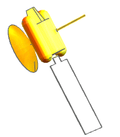

The software simulates radiation based on view factors between radiating elements. The solver calculates black body view factors between all radiation elements. To calculate radiative conductances, it combines these factors with thermo-optical properties, which you define for every radiating element.
For surfaces that do not obey the gray body approximation, ray-traced view factors can be calculated instead of black body view factors.
You can calculate radiation between surfaces defined by:
Faces of 3D solid elements.
The top and/or bottom of 2D shell elements based on the orientation of the element normals that you specify.
The implied surface of 1D beam elements based on the section properties you define.
The implied surface of 0D concentrated mass elements based on the diameters you specify.
If you want an element or group of elements to participate in radiation exchange, you must apply Thermo-Optical Properties and define a Radiation simulation object to calculate view factors between these elements.
